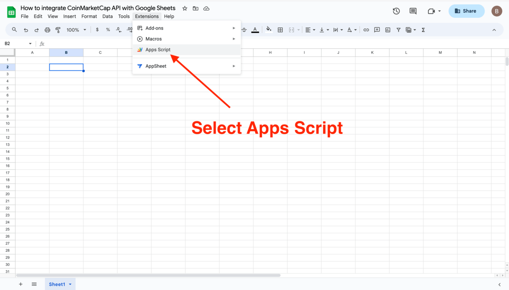
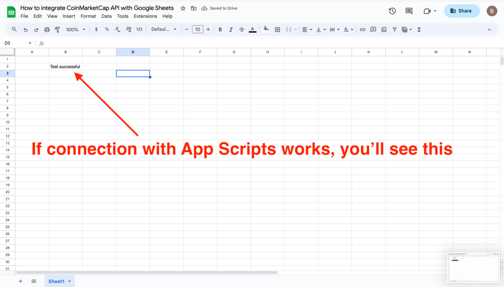

Google Sheets: árfolyam szkripttel
Az Excel helyett választható megoldás: beilleszted a szkriptet, engedélyezed a saját kódod futását, majd beállítod a frissítést. Mindkét útvonal ugyanazt az API-kérést használja.
- Google Sheetsben is lekérted az árfolyamot, egy rövid szkript segítségével;
- láttad, hogy a szkript csak ugyanazt a hívást csomagolja, amit már kétszer megcsináltál;
- Excel nélkül is van teljes értékű megoldásod.
Ugyanaz, harmadik eszközben
A Google Sheets nem Power Queryvel, hanem egy pár soros szkripttel hívja az API-t (Apps Script, a Google beépített automatizáló nyelve). Ne ijedj meg a kódtól: soronként megnézzük, és pontosan azt csinálja, amit a böngésződ, csak utána cellákba írja az eredményt.
- Nyiss egy új Google-táblázatot (sheets.new), majd válaszd: Extensions → Apps Script. Új fülön megnyílik a szkript-szerkesztő.

A Sheets Extensions menüje az Apps Script ponttal - Töröld ki a szerkesztőben lévő üres függvényt, és illeszd be a mi szkriptünket: cmc_sheets_script.txt (nyisd meg jegyzettömbben, másold be). A kulcs helyére írd a sajátodat.
- Mentsd a projektet, majd a felső függvényválasztóban válaszd az arfolyamFrissites függvényt, és kattints a Run gombra. Első futáskor a saját kódodhoz engedélyt kell adnod a táblázat kezelésére és a külső kéréshez. Olvasd el az engedélykérést. Ha nem ellenőrzött alkalmazásra vonatkozó jelzés jelenik meg, a saját, átnézett szkriptednél az Advanced alatt folytathatod. Egyetemi fióknál rendszergazdai korlátozás is lehet; ilyenkor használd az Excel-útvonalat, vagy egyeztess az oktatóval.

A Google engedélykérő ablaka a szkript első futtatásakor - Válts vissza a táblázatra. A szkript létrehozza az ARFOLYAMOK munkalapot, és az A1:C3 tartományba írja a fejlécet, a Bitcoin és az Ethereum árát, valamint a lekérdezés időpontját. Ez a lap a szkript kimenete; ne írj saját adatokat az A:C oszlopába, mert frissítéskor felülírja azokat.
A táblában két sor adat áll, és a Run gomb újranyomására az időbélyeg frissül, és új lekérdezés történik. Az ár ugyanaz is maradhat a szolgáltató gyorsítótára miatt.
Ha mást látsz: ha a szkript hibát dob, a leggyakoribb ok itt is a kulcs: nézd meg, hogy az idézőjelek megmaradtak-e a beillesztésnél.
A harmadik kriptóhoz csak az IDS listát bővítsd: const IDS = ['1', '1027', '5426'];. A szkript a lista alapján automatikusan kiírja a sorokat; külön soríró kódot már nem kell másolnod. Futtasd újra, és ellenőrizd az A1:C4 tartományt.
A szerkesztő bal oldalán nyisd meg a Triggers oldalt: Add Trigger → függvény: arfolyamFrissites → eseményforrás: Time-driven → Hour timer → óránkénti futás. Egyetlen ilyen időzítőt hozz létre. A felhőben fut, ezért a gépedet nem kell bekapcsolva hagynod; a futás nem feltétlenül a pontos egész órakor indul. A gyakorlás után a Triggers oldalon töröld az időzítőt, hogy ne fogyassza tovább a CMC-keretedet.
- Az Apps Script bármely Google-eszközt automatizál: Gmail, Naptár, Drive; magyar nyelvű súgója is jó.
- Ugyanez a minta minden szkriptelhető környezetben: hívás, JSON, kiírás.
- A későbbi AI-s napokon ilyen szkriptet AI-val is íratsz; a mai tapasztalat alapján tudni fogod, mit kell rajta ellenőrizni.